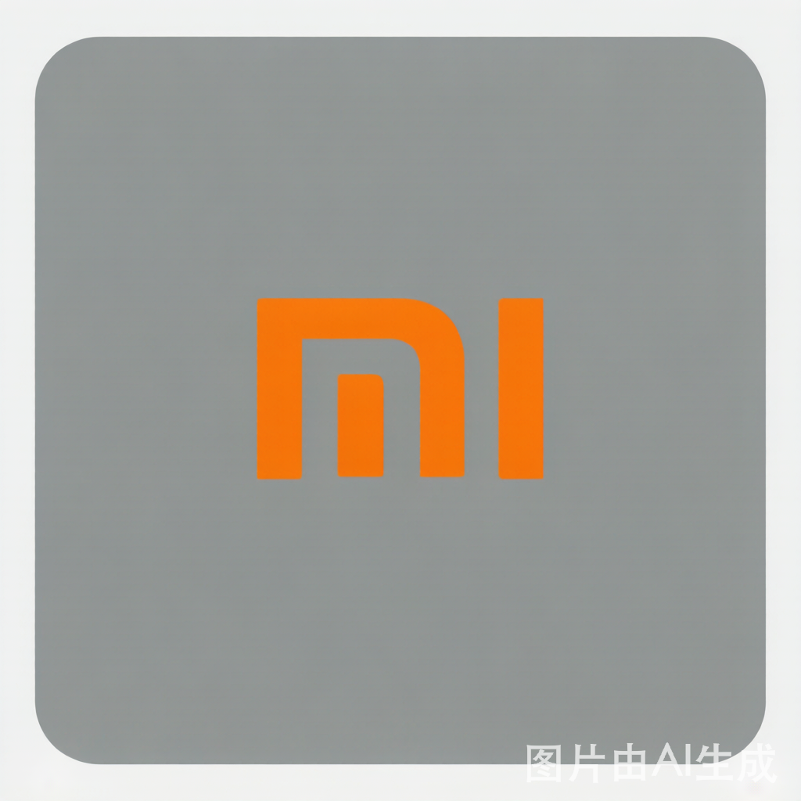

📱 发布会追踪
🔍 系统更新日志
← 返回系统更新列表

小米 · 系统级 · AI 搜索/笔记
· AI Search / AI Note
HyperOS 3 Global · AI 搜索 / AI 笔记 / Hyper Island
📅 2025-09-24 全球发布
争议/待验证
系统级
AI Search
AI Note
Hyper Island
⚠️
争议/待验证
5 大 AI 功能，但海外深度反馈远少于三星/苹果
更新了什么 & 用户怎么看
👍 好用
5 大 AI 功能齐全：搜索/笔记/描述/翻译/降噪
跨设备互联：手机-平板-车机协同
性能提升 30%：官方宣称流畅度优化
👎 不好用
海外深度反馈少：不如三星/苹果社区活跃
推送分 3 阶段：全球版 Oct 2025→Mar 2026，早期东南亚为主
AI Search 缺吐槽样本：官方主打但少功能级评测
NokiaMob 清单
官方 HyperOS 3
来源
：NokiaMob 清单 · 官方 HyperOS 3
信息说明
：以上利弊基于海外社区与媒体实测反馈整理；标记为「争议/待验证」的条目后续将持续补充 Reddit / YouTube / XDA 真实用户讨论。